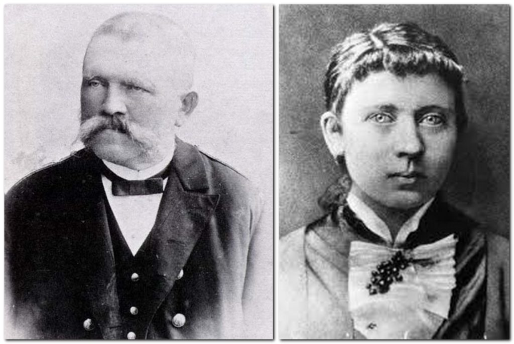
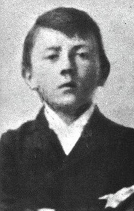
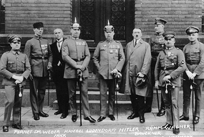

20 April 1889 :
Adolf Hitler is born on April 20th in Braunau am Inn in the empire of Austria-Hungary.
His parents' families are both of poor peasant backgrounds. His father, Alois, regarded as strict and distant, becomes a customs official and expects Adolf to follow a career into the civil service. Hitler’s mother, Klara, is of a more compassionate nature, adoring and indulging her son.
At the age of six Adolf attends school and, while clearly intelligent, he is uninterested in formal education, eventually leaving with a poor educational record of achievement.
The death of his father when Adolf was 13, releases the pressure on him to get a job working for the civil service, Adolf is able to pursue his preferred choice of study, that of art. He attends art school and regards himself as an artist, absorbing diverse cultural influences, the opera, theatre, reading and drawing.
1907
Hitler moves to Vienna with the aim of attending the Vienna Academy of Art, but his application is rejected. His disappointment is compounded by his failure to also get into the Vienna School of Architecture due to his inability to provide a school-leaving certificate.
1909—1913
Without any means of money, Hitler struggles to survive in Vienna, living in a men’s hostel. He sells postcards which he’s drawn, of famous sights, and undertakes a series of menial jobs, to earn money.
During this period of poverty, Hitler engages in much political activity, attending meetings, absorbing political newspapers and literature.
1913
Faced with military service for the Habsburg Empire, Hitler takes action to evade this by moving to Munich in Southern Germany. This move is possible in part due to his inheritance of a small legacy from his father’s estate. Here his life continues much as before, until world events changed the course of Hitler’s life.
1914
At the outbreak of the First World War, Hitler volunteers for service in the German army and joined the 16th Bavarian Reserve Infantry Regiment. He distinguishes himself in service, being promoted to corporal and decorated with the Iron Cross for services as a runner on the western front.
1918
At the time of the armistice, Hitler is lying in hospital suffering from temporary blindness due to a British gas attack in Ypres Salient. He returns to his regiment in Munich, later in the year.
1919
Intent on remaining in the army, having found real purpose to his life, Hitler is appointed to the Intelligence/Propaganda section where he undertakes political training. His activities involve making speeches to the troops advocating German nationalism and anti-Socialism, where he developed further his oratory skills.
He also acts as an army informer, spying on small political parties. He joins the German Workers’ Party, an extreme anti-communist, anti-Semitic right wing organisation.
1920
Hitler is discharged from the army. In the German Worker’s Party he undertakes responsibility for publicity and propaganda. He changes the party’s name to the National Socialist German Workers Party, (or Nazi for short) The party represents a combination of intense hatred for the politicians who they considered had dishonoured Germany by signing the Versailles Treaty and exploiting local grievances against a weak federal government.
1921
Hitler challenges Anton Drexler to become leader of the Nazi party. After initial resistance, Drexler agrees and Hitler becomes the new leader of the party.
1923
Along with other right wing factions and General Ludendorff he attempts to overthrow the Bavarian government with an armed uprising. The event became known as The Beer Hall Putsch. Hitler and 2000 Nazi’s march through Munich to the Beer Hall, to take over a meeting chaired by three of the most important individuals in Bavarian politics.
The following day, the Nazis march in the streets, the police open fire. Hitler escapes but is captured, tried for treason and serves 9 months in Landsberg prison. It was during his imprisonment that he began dictating his thoughts to Rudolf Hess, which emerged in the book Mein Kampf (my struggle). It is a mixture of autobiography, political ideology and an examination of the techniques of propaganda.
1925
Hitler re-founds the Nazi party.
1928
Hitler's half-sister (Angela Raubal) and her daughter Geli, move into Hitler's home on the Obersalzburg. Hitler's relationship towards Geli initially kindly, eventually borders on the obsessive, fueling rumours that they were romantically linked; Hitler denied this.
September 1930
In the General Election, the Nazi Party increases its representatives in parliament from 14 to 107. Hitler is now the leader of the second-largest party in Germany.
>1931
Hitler challenges Paul von Hindenburg for the presidency, but fails to win.
September 1931
Geli Raubal found dead at Hitler's flat in Munich. She was 23. Verdict: suicide.
1932
Hitler becomes a German citizen—enabling him to stand in the Presidential election against Hindenburg.
Became the first person to electioneer by aircraft, the campaign (masterminded by Josef Goebbels) was entitled 'Hitler over Germany'.
January 1933
Hitler becomes chancellor of a coalition government, where the Nazis have a third of the seats in the Reichstag.
February 1933
The German Reichstag is destroyed by fire. The plot and execution is almost certainly due to the Nazis, but they point the finger at the communists and trigger a General Election.
March 1933
The Enabling Act passed—powers of legislation pass to Hitler’s cabinet for four years, making him virtual dictator.
He proclaims the Nazi Party is the only political party permitted in Germany. All other parties and trade unions are disbanded. Individual German states lose any autonomous powers, while Nazi officials become state governors.
April 1933
Communist party banned.
May 1933
Socialists, Trade Unions and strikes banned.
October 1933
Hitler withdraws from the League of Nations. In the following months, he trebles the size of the German Army and ignores the arms restrictions imposed by the Treaty of Versailles.
June 1934
Night of the Long Knives. Hitler crushes all opposition within his own party—thus eliminating any of his rivals.
July 193
After the death of President Hindenburg, Hitler becomes “Fuehrer and Reich Chancellor” and abolishes the title of President.
1935
Hitler re-arms Germany with the aim of undoing the Treaty of Versailles and uniting all the German peoples. Military conscription is introduced.
March 1938
The Austrian Chancellor, leader of the Austrian Nazi Party, invites the German army to occupy Austria and proclaim a union with Germany.
September 1938
British Prime Minister, Neville Chamberlain meets Hitler in Germany. Britain, France and Italy sign the Munich Agreement which gives the Sudetenland (the German populated borderlands of Czechoslovakia), to Germany.
1938
German army occupies the Sudetenland.
November 1938
In what is historically referred to as Crystal Night, 7,500 Jewish shops are destroyed and 400 synagogues are burnt. The attack is portrayed as a spontaneous reaction to the death of a German diplomat by a Jewish refugee in Paris. It is actually orchestrated by the Nazi party who also kill many Jews and send 20,000 to concentration camps.
Crystal Night is considered to be the beginning of the Final Solution and the Holocaust, which you can study in more depth. The mass killing represented by the Holocaust raises many questions concerning the development of European civilisation during the twentieth century.
1939
Peace treaty with Russia secured with the Molotov-Ribbentrop pact. Hitler invades Poland on September 1st and after 3 weeks of lightning war or ‘Blitzkrieg’ the country is divided between Russia and Germany. On September 3rd France, Britain, Australia, and New Zealand declared war on Germany.
1940
The Nazis occupy Denmark, Norway, Holland, Belgium and France. Romania and Yugoslavia are invaded.
June 1941
Germany attacks Russia, ignoring the peace pact. Operation Barbarossa, The German invasion of Russia, begins.
December 1941
Japanese Air Force attacks Pearl Harbour and war is declared on the US.
February 1943
Although commanded by Hitler to stand and fight, the Germans surrender in the battle of Stalingrad. From this point in the war, Germany is continually retreating.
July 1944
Hitler survives an assassination attempt by Colonel Stauffenberg, who places a bomb in a briefcase under a table close to Hitler. As a result, Hitler purges the army of all possible suspects.
January 1945
Soviet troops enter Nazi Germany.
22 April 1945
Hitler decides to stay in Berlin to the last.
26 April 1945
Berlin completely besieged by the Soviet Army Fronts of Marshals Koniev and Zhukov.
30 April 1945
Hitler commits suicide with his wife of two days, Eva Braun; their bodies are believed to have been cremated.